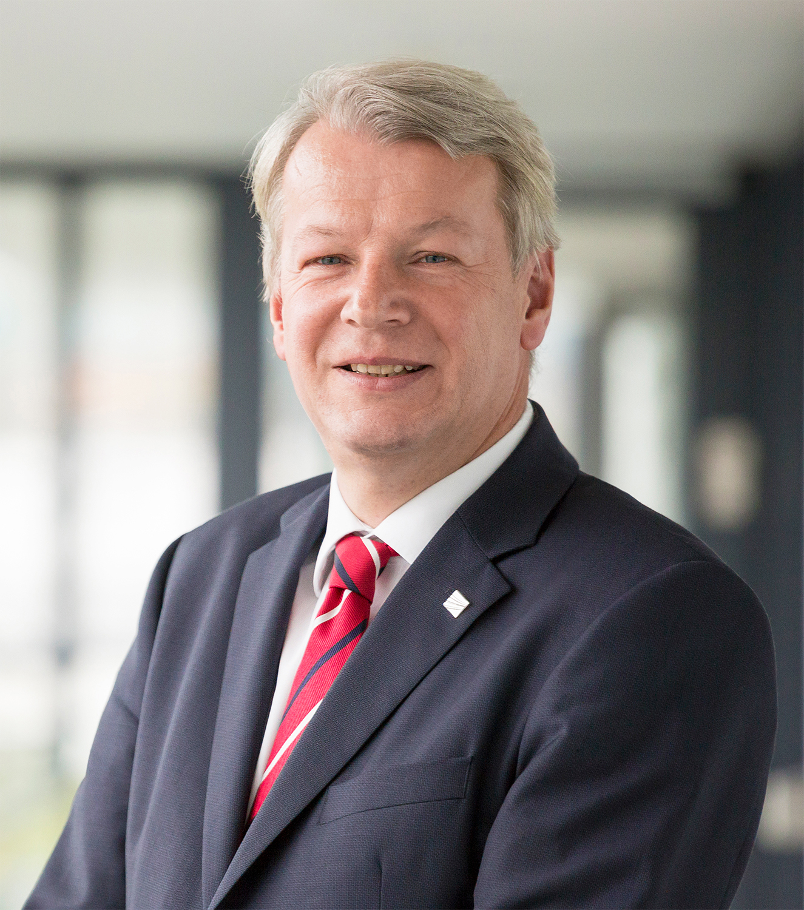

KEYNOTE SPEAKER
Prof. Dr. Peter Liggesmeyer (Fraunhofer IESE, Germany)

Title:
Engineering Smart Ecosystems: Challenges and Solutions
Abstract:
On the one hand, many standards in software and systems engineering are based on assumptions that are currently no longer fulfilled: Systems are treated as closed, static artefacts, with no autonomy and typically the underlying development process is assumed to be traditional and phase-oriented. On the other hand, systems in many domains – e.g. Industry 4.0, autonomous driving, energy management – are different: They are open, they do dynamic adaption in an autonomous way and they are large and heterogenous. This influences the systems engineering solutions that are to be applied in order to master these challenges. The talk will discuss these challenges and will present recent solutions.
Short bio:
Prof. Dr. Peter Liggesmeyer is the Director of the Fraunhofer Institute for Experimental Software Engineering IESE in Kaiserslautern and has been holding the chair of Software Engineering: Dependability in the Department of Computer Science at the University of Kaiserslautern since 2004. From 2014 to 2017, he managed the affairs of the Gesellschaft für Informatik (GI e.V., German Informatics Society) as its President. Prof. Liggesmeyer is the scientific spokesperson of the research council of “Plattform Industrie 4.0” and a member of the advisory board of the BMBF program “Future of Value Creation – Research on Production, Services and Work”. Since 2018, he has been the chairman of the Governing Council of the “Assuring Autonomy International Programme (AAIP)”, a partnership between the Lloyd’s Register Foundation, London, and the University of York (United Kingdom). His research interests are safety and dependability analysis techniques as well as comprehensive security and safety analysis processes for Digital Ecosystems, primarily in the application fields of digital commercial vehicle technology, Industry 4.0, medicine, and “Smart Rural Areas”.